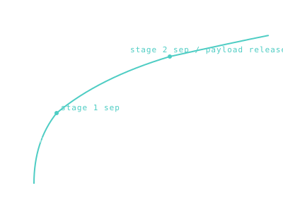

Launch + Ascent
The most violent ten minutes of any mission — fighting gravity, atmosphere, and the rocket equation simultaneously.

101 · zoom in
Most of the danger in spaceflight happens in the first eight minutes. The rocket lights, fights its own weight to lift off the pad, climbs through air dense enough to tear it apart, and accelerates from zero to seven and a half kilometres per second by the time the engine shuts off. If anything goes wrong during ascent, there is rarely time to fix it.
The arithmetic is brutal. Reaching orbit takes ~9.4 km/s of ∆v, but only ~7.9 km/s actually contributes to orbital speed. The rest is wasted on "gravity loss" (you have to keep firing just to hold the rocket up while it climbs) and "drag loss" (the atmosphere pushing back). Engineers spend years optimising the pitch program — exactly when and how much to tilt — to minimise these losses.
Once the rocket is high enough that the air gives up, things get easier. Stages separate, fairings pop off, the second stage takes over for a longer, gentler push. The whole journey is a calibrated drop of dry mass: every kilogram of empty tank you can ditch is a kilogram the next stage doesn't have to accelerate. SpaceX bucks this and recovers its first stages; everyone else throws them away.
Launch ascent costs about 9.4 km/s of ∆v, but barely 7.9 km/s of that is actual orbital velocity. The rest is gravity loss (you spend energy holding the rocket up while it climbs) and drag loss (atmosphere fighting back). Pitch-program right and you minimise both — too vertical wastes thrust on altitude that doesn't help orbital insertion; too horizontal and the atmosphere has more time to slow you down.
Stages drop along the way. First-stage separation, second-stage ignition, fairing jettison, payload-release. Each stage drops dry mass that the next one no longer has to accelerate. Falcon 9 returns its first stage; Saturn V didn't. The trade is whether the recovery hardware costs more than the propellant it would have taken to throw the stage away.
On `/missions` the launch_vehicle field tells you which rocket flew the mission. Saturn V for Apollo. Atlas V for Curiosity. Falcon 9 for Crew Dragon. SLS for Artemis I. Each rocket has a fixed C3-vs-payload curve — the rocket sets the ceiling on what's possible.
SEE IN THE APP
- /missions Each mission's launch_vehicle and pad are in the FLIGHT tab